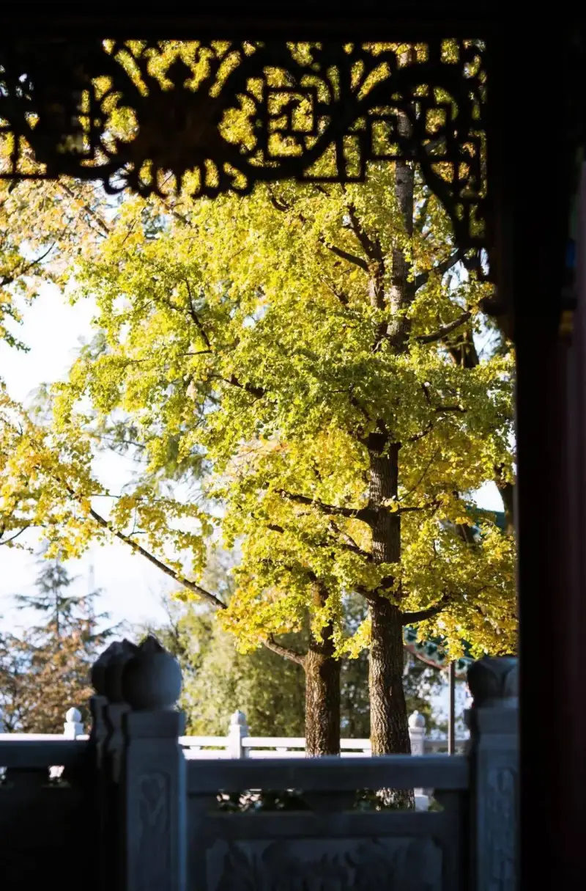
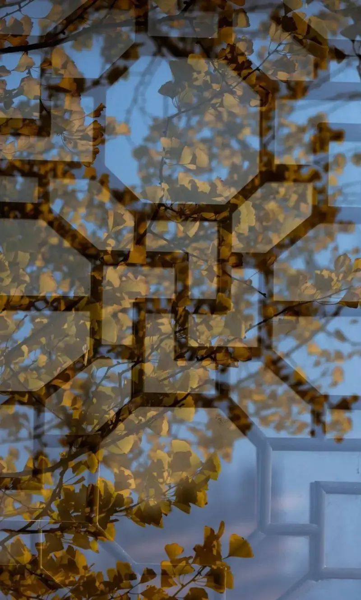
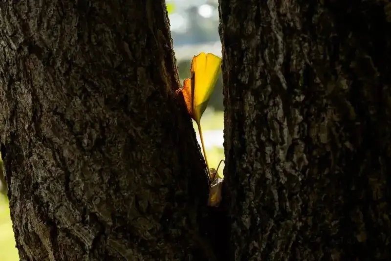

Published: 2022-09-26
Source link: https://www.cnphotos.net/academy/show-93.html
You shoot ginkgo every year, and each year the photos may look much the same. So how do you find a breakthrough? Have you thought carefully about these questions? For example, how do you shoot with a wide angle? Besides shooting up and down, is there a fresher angle? We usually look for backlight, but how do you work with front light?
There are many more questions like these. If you do not think before you shoot, it is hard to get good photos. Before you shoot, you first need some ideas.

We often like to use a long lens, but when we face a whole grove of ginkgo, we may end up shooting a pile. Branches that are too thick and solid do not look good.
Slender branches are easier to shoot and make the frame feel more alive.
If the whole scene is too messy, choose to shoot a small part at sunset.
For heavy leaves and branches, choose the parts with the best form.
If the background has other clutter, or the aperture is not wide enough and you are too close to the background, the background becomes too solid. This kills the mood and pulls attention from the main subject.
Sometimes you only need to squat down and shoot from a slightly higher angle to get a clean frame.
If there is no very retro, simple background, just take the shape of the background.
Because of the terrain, we often shoot upward. With similar angles, choose different foregrounds to block the view so you avoid monotony.
Leaves with a unique shape and clear light work well as a foreground.
Use backlight to darken the foreground, and shoot through gaps in the trees to get this kind of frame.
Backlight darkens the background, simplifies the surroundings, and makes the main subject stand out.
Besides backlight, side backlight, narrow light, and light leaking through tree gaps have a similar effect.
The light leaking through tree gaps not only brings out the subject but also forms beautiful bokeh in the lens.
Front light makes the frame look flat and hard. In most cases, it is not advised to shoot in front light. Rather than using backlight to show fine texture, front light is better paired with a retro foreground to set a mood.
Or use multiple exposures to bring out a different feel.

Earlier we said you must know what to leave out before you shoot. Shooting a tree well is not as good as shooting one leaf well. So how do you shoot one leaf well?
To shoot a leaf, mainly use the narrow light and leaking light through the leaf gaps to show light and shadow.
Moss, green plants, or rotting wood can all serve as a background.
Backlight is essential for shooting leaves. You can also arrange the scene to get the light effect you want.

If the frame is out of focus, or the depth of field is too shallow and the image is not sharp, the photo is a failure.
You want both the foreground and the far view to blur. With a long lens, do not open the aperture all the way. Use around f/4.5, and make sure the subject sits on the same focal plane.
When you are not sure where to focus, focus on a branch or trunk.
When you use a long lens in low light, raise the ISO to avoid losing focus from camera shake.